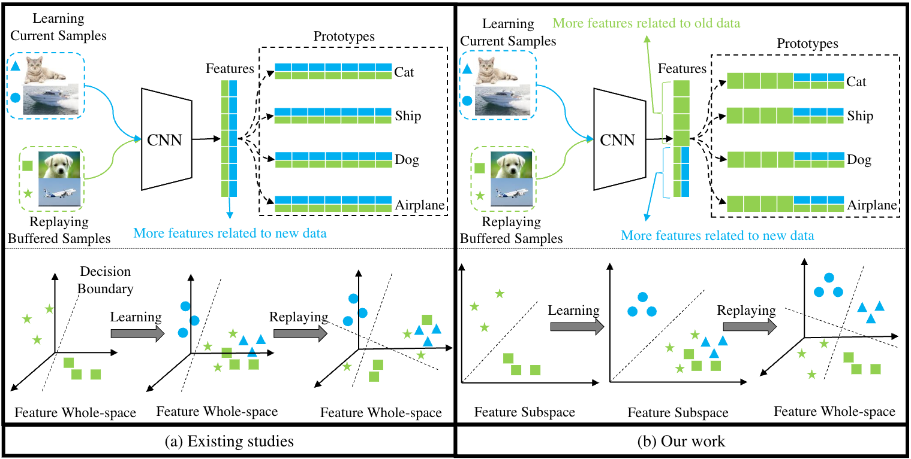
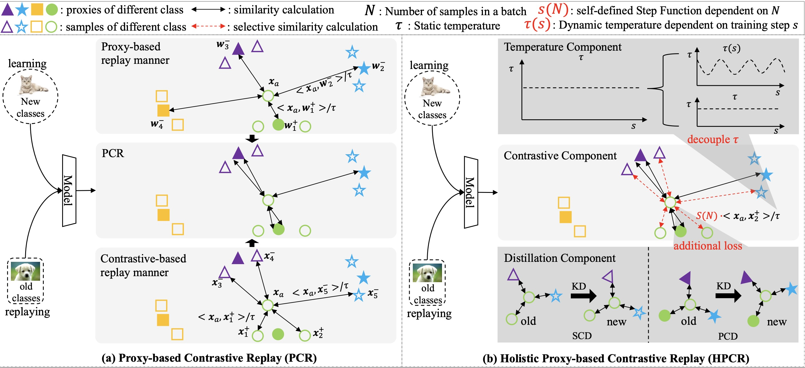
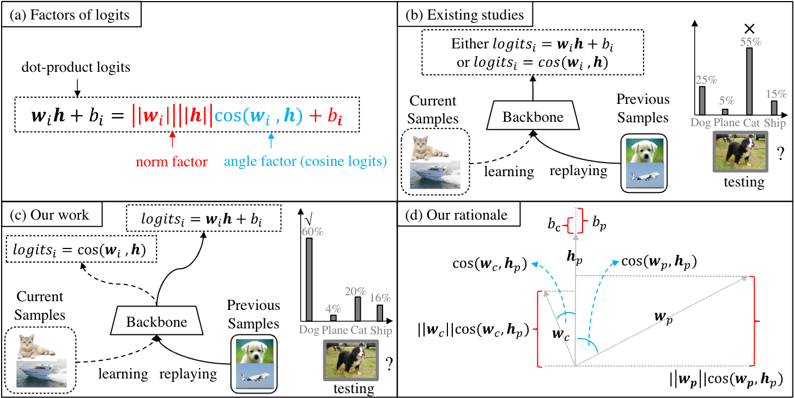
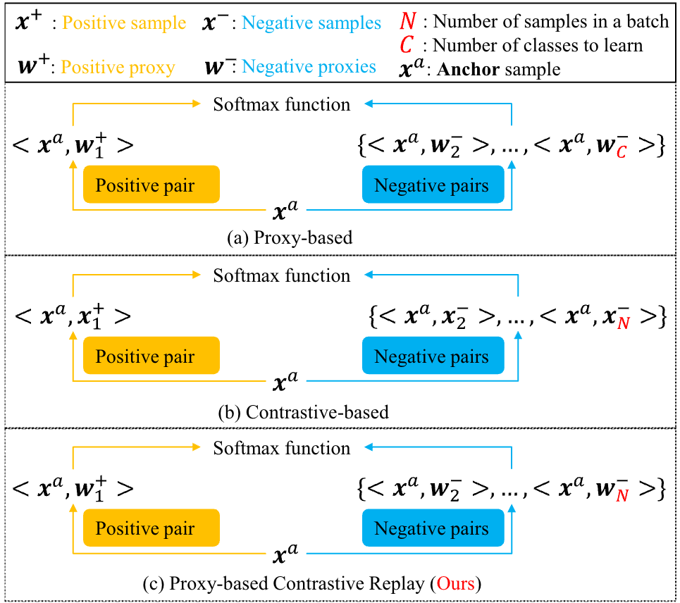
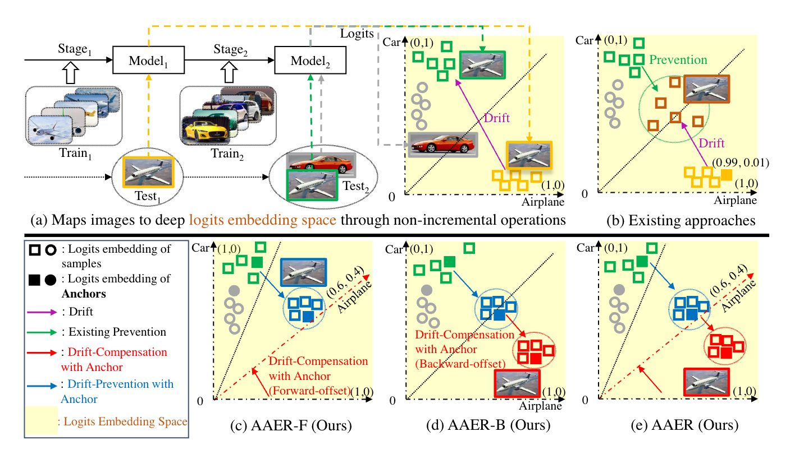

Felix Huiwei Lin (林辉威)Postdoctoral Fellow
JC STEM Lab of Machine Learning and Symbolic Reasoning
|
 |
Biography
Educations
Publications [Google Scholar]
|  | ER-FSL: Experience Replay with Feature Subspace Learning for Online Continual Learning Huiwei Lin |
|  | HPCR: Holistic Proxy-based Contrastive Replay for Online Continual Learning Huiwei Lin, Shanshan Feng, Baoquan Zhang, Xutao Li, Yew-soon Ong, Yunming Ye |
|  | UER: A Heuristic Bias Addressing Approach for Online Continual Learning Huiwei Lin, Shanshan Feng, Baoquan Zhang, Hongliang Qiao, Xutao Li, Yunming Ye Proceedings of the 31st ACM International Conference on Multimedia, 2023 |
|  | PCR: Proxy-based Contrastive Replay for Online Class-Incremental Continual Learning Huiwei Lin, Baoquan Zhang, Shanshan Feng, Xutao Li, Yunming Ye Proceedings of the IEEE/CVF Conference on Computer Vision and Pattern Recognition, 2023 |
|  | Anchor Assisted Experience Replay for Online Class-Incremental Learning Huiwei Lin, Shanshan Feng, Xutao Li, Wentao Li, Yunming Ye IEEE Transactions on Circuits and Systems for Video Technology, 2023 |
© Felix Huiwei Lin | Last updated: July 8 2024